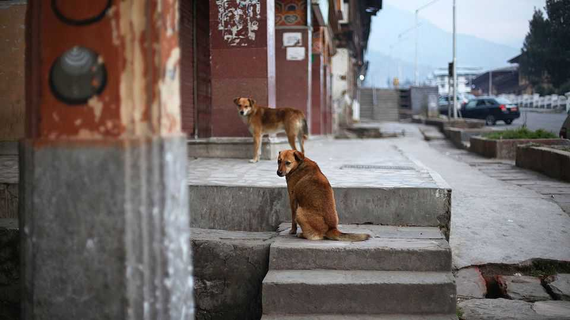

Tackling stray dogs in Bhutan
A lively campaign in a small country shows what to do

Oct 22nd 2026
CROSS FROM India into Bhutan at Jomotshangkha and little seems to change. The same hills stretch across the border, roadside shops sell mostly identical wares and similar-looking dogs laze on the streets. Yet the observant visitor may notice one difference: the dogs on Bhutan’s side have notched ears.
Those marks signify sterilisation and vaccination against rabies. The tiny Himalayan kingdom has sterilised its entire stray-dog population. With mass vaccination and free treatment for people who’ve been bitten, this has helped eliminate human rabies carried by dogs, making Bhutan just one of three countries to do so. The disease, a global scourge, is especially deadly in South Asia. In India rabies kills some 5,700 people a year, by one estimate. Bhutan’s last human death from it was in 2023.
Like its much bigger neighbours, Bhutan has long grappled with stray mutts. In the 1980s marksmen used dart-guns from the UN’s World Health Organisation to shoot dogs in public. In some places dogs were fed raw meat laced with strychnine. The campaign appalled Bhutan’s people, most of whom are Buddhist. Nor did it work: dog numbers kept rising.
From 2009 the government switched to a gentler approach. Dogs were caught, neutered, vaccinated and released. But implementation was patchy. Over nine years some 92,000 animals were treated, but vaccination rates never got close to the 70% needed to break transmission. It took a royal decree to give the campaign bite as well as bark. In 2021 the king ordered “a professional, humane and compassionate sterilisation of the entire free-roaming dog population”. Some 9,000 members of De-suung, a national volunteer corps, helped count the dogs, keep records and stir up communities. In under two years vaccinations hit 90%.
Other Asian countries should take note. The scale of the problem in places like Bangladesh and India, which host millions of stray dogs, many of them rabid, may seem daunting. But local governments could follow Bhutan’s example, pooling resources and tackling the problem one area at a time. ■
For exclusive coverage of Asian politics, economics and security, sign up to Asia Bulletin, our weekly subscriber-only newsletter.